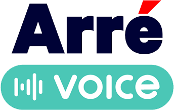

Signal Lost · Searching for a New One

You're already inside it. The next story won't let you go.

Audio horror, served slow. New Indian voices, old Indian fears, and stories that don't end when the episode does.
Join The Listening Circle on WhatsApp — get early drops, explainer videos, and previews of every new playlist before anyone else.